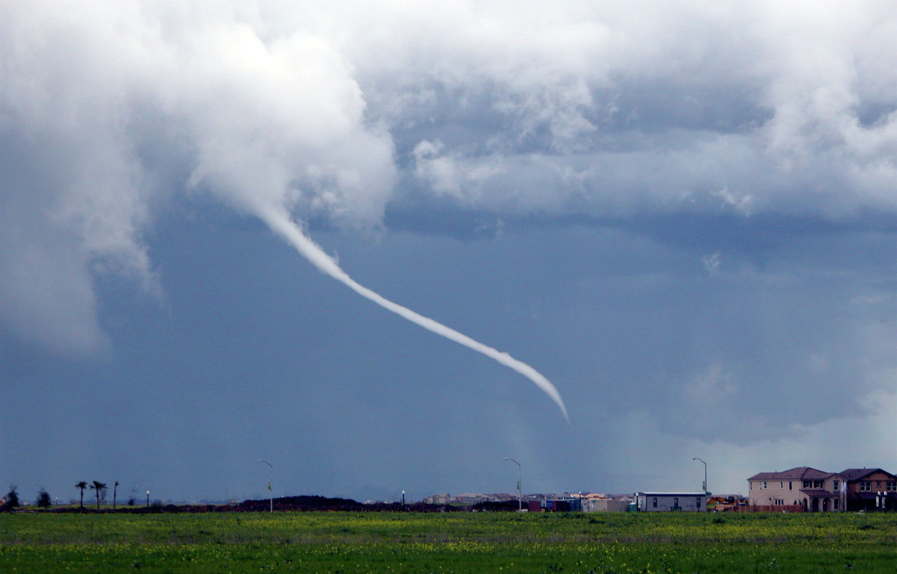

Tornadoes in SLO
Wild weather! A longer paragraph to simulate real content.
Can't believe how I woke up to a tornado warning at 12 am. The weather has been so weird lately, and a tornado warning happening in the central coast was not on my 2025 bingo card. Life moves on!